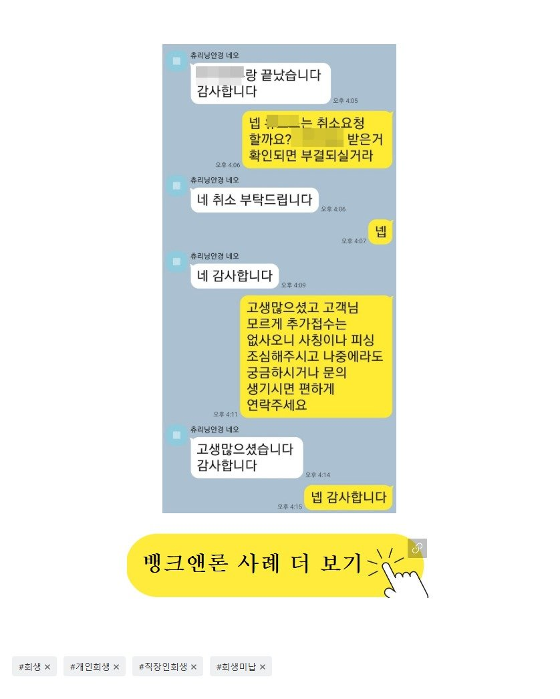

개인회생 중 직장인 미납정리조건 진행 사례!!
회생 중 직장인 분의 미납정리조건 추가자금 진행사례를 소개합니다.
사대가입 직장인으로 재직은 1년 9개월 소득신고는 2700
개인회생 36회 중 14회차 미납은 3회 월변제금은 67만
채무는 대부업 2건 470+ 80만 이었습니다.
소득이 많은건 아니시지만 채무가 많지 않아 일
견 나쁘지 않아보이는 조건이었으나
회생이 13회차 임에도 불구하고 지금까지 쓰셨다가
상환한 금융사만 4곳으로
지금 이용중인 금융사를 포함하면 대출 경험이 6건으로 적지 않았습니다.
또한 상환한 금융사들이 단기사용이라 재심사를
안받아 줄 가능성이 낮았습니다.
해보지 않았던 금융사들 위주로 접수를 해드리려 했으나
사용하던 금융사들을 전부 인지하고 있진 못했고
어쩔수 없이 접수가능해보이는 곳은 전부 시도하기로 하였습니다.
총 8곳을 접수를 해드렸고 6곳에선 거절
한곳에선 미납정리 조건으로 700이 승인되었고
나머지 한곳은 심사가 끝나지 않아 취소요청을 드렸습니다

https://cafe.naver.com/cityman88/309364